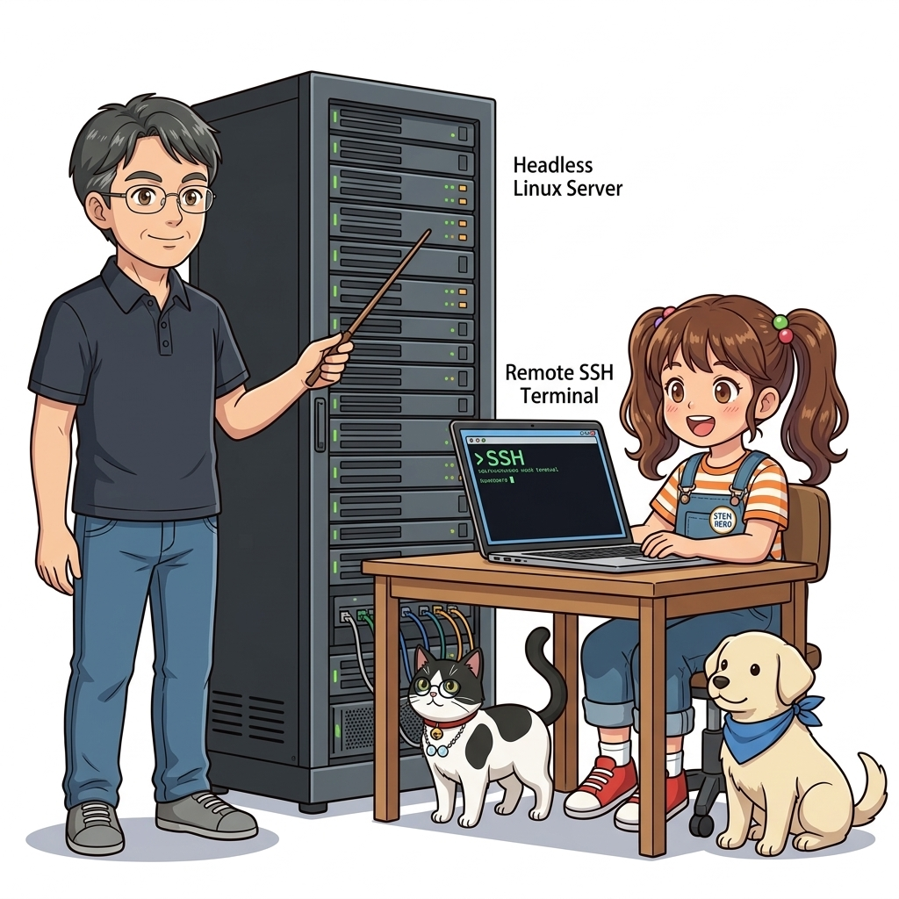
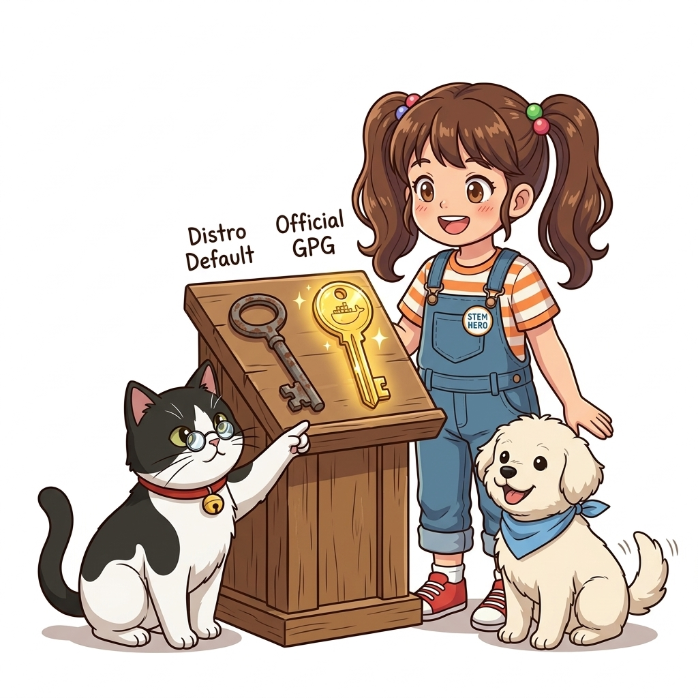
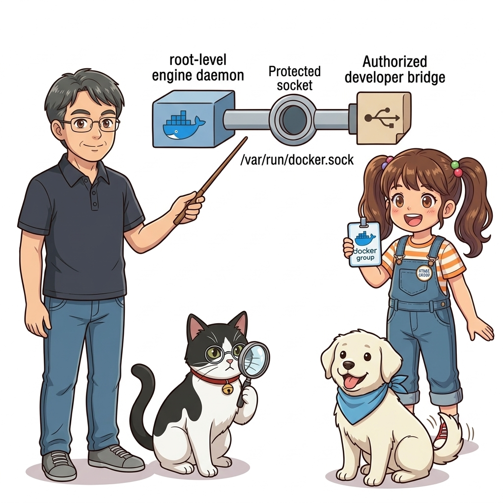
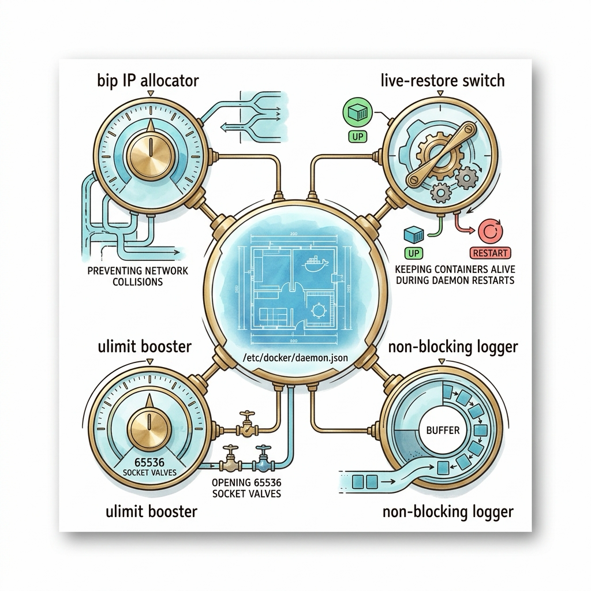
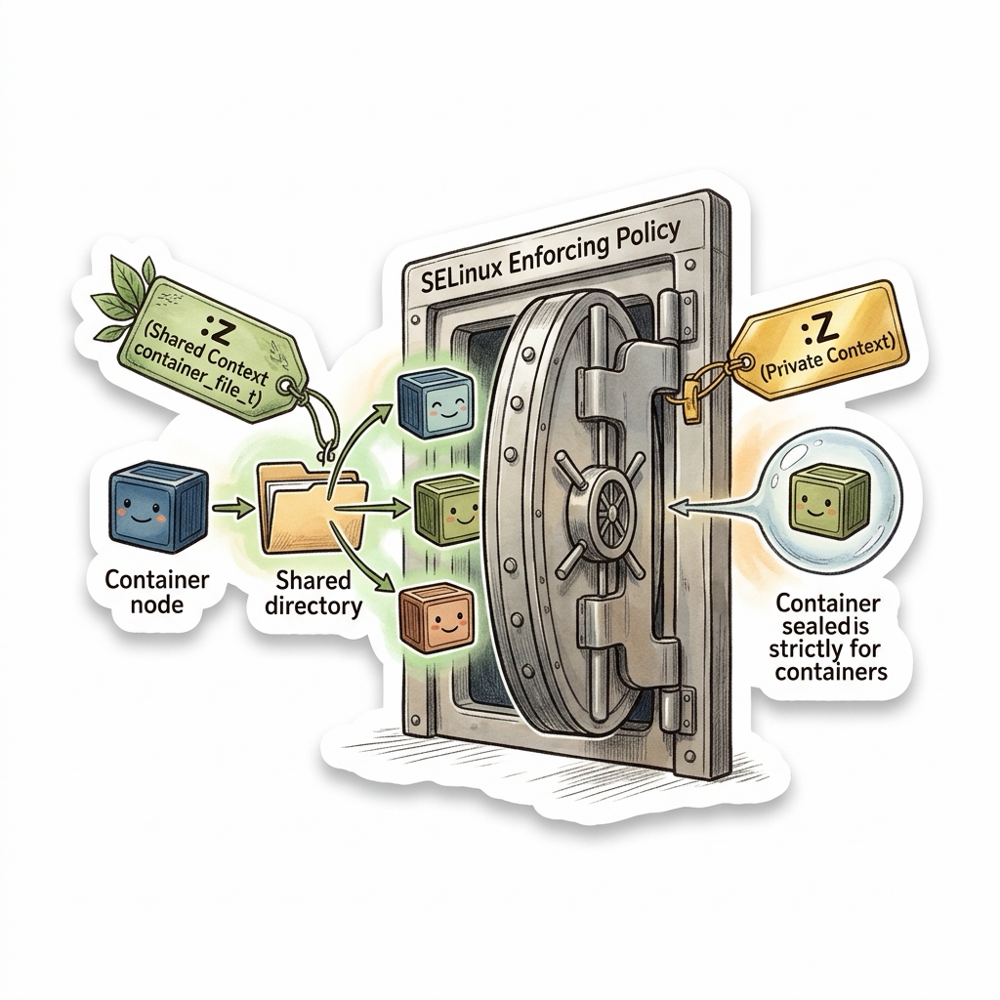
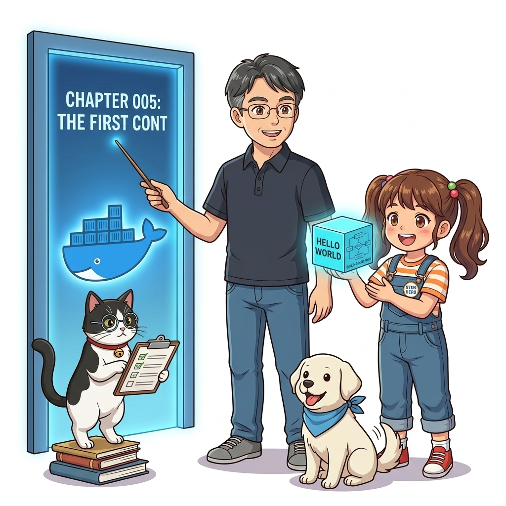
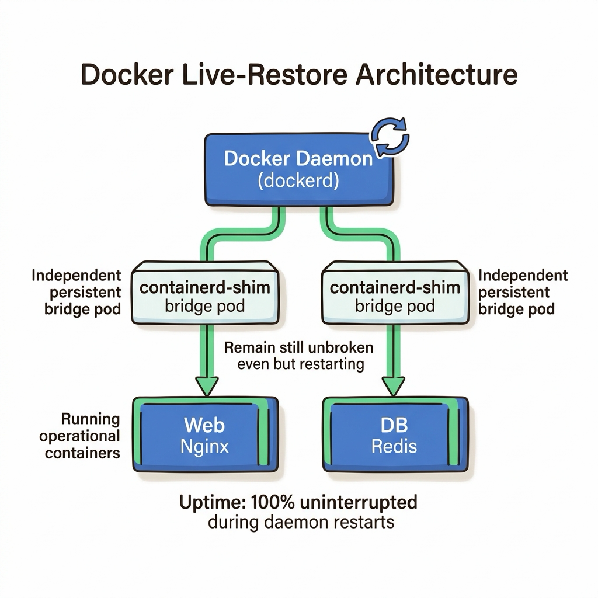

004. 실습 환경 구축 2: Linux 서버 Docker Engine과 CLI 검증
클라우드 데이터센터의 99% 이상을 차지하는 실제 운영 서버(AWS EC2, GCP Compute Engine, 온프레미스 베어메탈 서버)에는 모니터 화면이나 마우스로 조작하는 그래픽 데스크톱(GUI)이 존재하지 않습니다. 오직 검은색 콘솔 터미널과 SSH 원격 셸만이 존재할 뿐입니다.

그림 01-5-1 GUI가 배제된 순수 리눅스 헤드리스(Headless) 서버 환경에서의 Docker Community Edition(CE) 엔진개인용 컴퓨터에서 사용하는 ‘Docker Desktop’은 개발 편의를 위한 대시보드와 가상머신 번들이 포함된 무거운 패키지인 반면, 프로덕션 서버에는 불필요한 오버헤드를 일절 배제한 순수하고 가벼운 docker-ce 엔진 데몬(dockerd)만을 설치해야 합니다.
이번 절에서는 글로벌 엔터프라이즈 표준 운영체제인 Ubuntu 24.04 LTS를 기준으로, 보안이 검증된 공식 도커 APT 저장소를 등록하고, 시스템 데몬(systemd)으로 서비스를 등록하며, 일반 사용자 계정으로 안전하게 도커 CLI를 다루는 권한 체계까지 완벽하게 정복해 봅니다.
004.1 패키지 관리자의 함정: 배포판 기본 패키지 vs 도커 공식 저장소
리눅스를 처음 접하는 초심자들이 가장 흔히 저지르는 실수는 단순히 apt install docker.io 명령어로 설치를 끝내는 것입니다.
- 배포판 기본 패키지(
docker.io): 우분투 커뮤니티가 동결한 구버전 바이너리로, 최신 OCI 보안 패치나 Compose V2 호환성이 떨어집니다. - 도커 공식 저장소(
download.docker.com): 도커 공식 재단에서 직접 관리하며, 최신 보안 취약점이 패치된 안정화 버전(docker-ce,containerd.io,docker-buildx-plugin,docker-compose-plugin)을 완벽하게 제공합니다.

그림 01-5-2 패키지 위변조를 방지하기 위해 도커 공식 GPG 암호화 키를 키링에 등록하고 APT 리포지터리를 설정하는 과정🛠️ 리눅스 서버 공식 도커 엔진 4단계 설치 스크립트
# 1단계: 기존 구버전 패키지 충돌 방지 및 필수 전제 패키지 설치
sudo apt-get remove -y docker docker-engine docker.io containerd runc 2>/dev/null || true
sudo apt-get update
sudo apt-get install -y ca-certificates curl gnupg lsb-release
# 2단계: 도커 공식 GPG 암호화 키 등록 (보안 무결성 보장)
sudo install -m 0755 -d /etc/apt/keyrings
curl -fsSL https://download.docker.com/linux/ubuntu/gpg | sudo gpg --dearmor -o /etc/apt/keyrings/docker.gpg
sudo chmod a+r /etc/apt/keyrings/docker.gpg
# 3단계: 공식 APT 리포지터리 소스 리스트 추가
echo "deb [arch=$(dpkg --print-architecture) signed-by=/etc/apt/keyrings/docker.gpg] https://download.docker.com/linux/ubuntu $(. /etc/os-release && echo "$VERSION_CODENAME") stable" | sudo tee /etc/apt/sources.list.d/docker.list > /dev/null
# 4단계: 최신 Docker Engine, containerd, CLI, 플러그인 설치
sudo apt-get update
sudo apt-get install -y docker-ce docker-ce-cli containerd.io docker-buildx-plugin docker-compose-plugin
004.2 권한의 딜레마: 왜 도커는 기본적으로 root 권한을 요구하는가?
설치가 끝난 직후 일반 사용자 계정으로 docker ps를 입력하면 다음과 같은 권한 거부 오류가 발생합니다:
permission denied while trying to connect to the Docker daemon socket at unix:///var/run/docker.sock

그림 01-5-3/var/run/docker.sock 유닉스 도메인 소켓을 통한 통신 구조와 docker 그룹 소속 사용자 권한
이유는 도커 데몬(dockerd)이 리눅스 커널의 최상위 권한(root)으로 실행되며, 클라이언트 CLI와 통신할 때 사용하는 유닉스 도메인 소켓인 /var/run/docker.sock 파일의 기본 소유권이 root:root 또는 root:docker로 제한되어 있기 때문입니다.
매번 sudo docker를 입력하는 것은 매우 번거로울 뿐만 아니라, 개발자의 오타로 인해 호스트 시스템 전체가 파괴될 수 있는 심각한 보안 리스크를 안고 있습니다. 이를 해결하기 위해 현재 일반 사용자 계정을 docker 시스템 그룹에 등록해야 합니다.
# [권한 설정 1] docker 그룹이 없으면 생성
sudo groupadd docker 2>/dev/null || true
# [권한 설정 2] 현재 로그인된 사용자($USER)를 docker 그룹에 추가
sudo usermod -aG docker $USER
# [권한 설정 3] 로그아웃 없이 현재 셸에 새 그룹 권한 즉시 적용
newgrp docker
# [권한 설정 4] sudo 없이 정상 실행되는지 검증
docker run --rm hello-world
⚠️ 보안 경고 (Security Note):
docker그룹에 속한 사용자는 사실상 호스트 머신의 root 권한과 동등한 영향력을 가집니다(컨테이너에 호스트 루트 디렉터리를 볼륨 마운트할 수 있기 때문). 따라서 신뢰할 수 없는 외부 사용자 계정에게 무분별하게 docker 그룹 권한을 부여해서는 안 됩니다.
📊 Docker Desktop vs Server Docker Engine 비교
| 구분 항목 | Docker Desktop (Windows/macOS) | Server Docker Engine (Linux CE) |
|---|---|---|
| 운영 목적 | 개발자 개인 로컬 개발 및 테스트 환경 | 24/365 엔터프라이즈 프로덕션 서비스 운영 |
| GUI 대시보드 | Electron 기반 친화적인 시각화 UI 제공 | 없음 (순수 CLI, API, 모니터링 도구로만 제어) |
| 가상화 계층 | WSL2 / Apple Hypervisor 경량 VM 필요 | 가상화 계층 없음 (리눅스 커널 직접 실행, 0% 오버헤드) |
| 라이선스 | 대기업 업무용 사용 시 유료 구독 정책 적용 | 완전 무료 오픈소스 (Apache 2.0 라이선스) |
004.3 systemd 서비스 관리와 CLI 환경 검증
리눅스 서버가 재부팅되었을 때 도커 데몬과 실행 중이던 컨테이너들이 자동으로 부활할 수 있도록 systemd 서비스 자동 시작을 활성화해야 합니다.
# 도커 서비스 활성화 및 즉시 시작
sudo systemctl enable --now docker
sudo systemctl enable --now containerd
# 도커 데몬의 활성화 상태(active running) 확인
systemctl status docker --no-pager
🔍 리눅스 서버 도커 프로세스 구조도 (Mermaid Diagram)
flowchart LR
Systemd["⚙️ systemd (PID 1)"] --> Dockerd["🐳 dockerd 데몬 (/usr/bin/dockerd)"]
Dockerd --> Containerd["📦 containerd (/usr/bin/containerd)"]
Containerd --> Shim["⚡ containerd-shim"]
Shim --> Runc["🚀 runc (OCI 런타임)"]
Runc --> App["컨테이너 프로세스 (격리 실행)"]
그림 01-5-4 systemd 서비스 등록 상태와 docker-ce, containerd의 정상 구동 검증
004.B 📚 도커 바이블 심화: 프로덕션 도커 데몬 설정: /etc/docker/daemon.json 실무 핵심 파라미터 튜닝
출처 도서: 『시작하세요! 도커/쿠버네티스』 핵심 분석
리눅스 서버에 도커를 처음 설치하면 기본 설정만으로도 동작하지만, 실무 운영 환경에서는 사내망 IP 대역 충돌, 파일 디스크립터 고갈, 데몬 업데이트 시 서비스 중단 등 다양한 재앙을 예방하기 위해 /etc/docker/daemon.json 튜닝이 필수적입니다.
프로덕션 5대 핵심 파라미터:
bip(Bridge IP): 기본값172.17.0.1/16이 사내 인트라넷이나 VPN 사설 대역과 겹치는 경우 통신 두절이 발생합니다. 반드시 충돌 없는 대역(10.200.0.1/24등)으로 재할당해야 합니다.live-restore: true: 도커 데몬(dockerd) 프로세스가 업데이트나 크래시로 재시작되더라도, 실행 중인 컨테이너 프로세스를 죽이지 않고 그대로 유지합니다.default-ulimits: 기본값(1024)은 웹 서버나 DB의 소켓 동시 접속 수가 늘어나면Too many open files에러를 뿜습니다.nofile을65536이상으로 반드시 확장해야 합니다.log-driver&log-opts: 컨테이너별로 일일이 지정하지 않아도 시스템 전체에 논블로킹 모드와 로그 로테이션(10MB 3개)을 전역 강제합니다.metrics-addr: 프로메테우스가 도커 엔진 자체의 내부 상태를 수집할 수 있도록 엔진 메트릭 엔드포인트를 개방합니다.

그림 004-B-1 도커 엔진의 안정성을 극대화하는 daemon.json 프로덕션 핵심 튜닝 파라미터 인포그래픽# [실습] 엔터프라이즈 프로덕션 표준 /etc/docker/daemon.json 구성
cat << 'EOF' > /tmp/sample-daemon.json
{
"bip": "10.200.0.1/24",
"live-restore": true,
"default-ulimits": {
"nofile": {
"Name": "nofile",
"Hard": 65536,
"Soft": 65536
}
},
"log-driver": "json-file",
"log-opts": {
"mode": "non-blocking",
"max-buffer-size": "4m",
"max-size": "10m",
"max-file": "3"
},
"storage-driver": "overlay2"
}
EOF
cat /tmp/sample-daemon.json
rm -f /tmp/sample-daemon.json
👨🏫 이호진 교수님의 바이블 멘토링 노트: “새 서버에 도커를 깔고 가장 먼저 해야 할 일은 컨테이너를 띄우는 것이 아니라 daemon.json을 올바르게 세팅하는 것입니다. 특히 live-restore 옵션은 운영 중 도커 데몬 보안 패치를 무중단으로 수행할 수 있게 해주는 생명줄입니다.”
👧 도로시의 깨달음: “엔진의 기본 설정값들을 튼튼하게 맞춰놓지 않으면 아무리 좋은 앱을 올려도 밑바탕에서 흔들릴 수 있겠네요!”
🐱 조교 지니의 아키텍처 체크포인트: “daemon.json 파일을 수정한 뒤에는
sudo systemctl reload docker를 실행하면 컨테이너 중단 없이 안전하게 설정을 갱신할 수 있습니다.”
004.C 📚 도커 바이블 심화: sudo 없는 도커 실행(docker 그룹)의 보안 진실과 SELinux 컨텍스트 레이블(:z, :Z)
출처 도서: 『제대로 배우는 도커』 핵심 분석 (제대로 배우는 도커 제2장 (설치하기: 2.2~2.3 SELinux & sudo 없이 실행하기))
리눅스 서버에 도커를 설치한 뒤 편의를 위해 흔히 실행하는 명령어가 있습니다:
sudo usermod -aG docker $USER
1. docker 그룹의 보안 진실 (Root 권한과 동등함):
- 도커 데몬 소켓(
/var/run/docker.sock)은 root 소유이며docker그룹에 쓰기 권한이 부여되어 있습니다. - 일반 사용자를
docker그룹에 추가하는 것은, 해당 사용자에게 암호 없는 완전한 호스트 root 권한을 부여하는 것과 100% 동일합니다. - 사용자가
docker run -v /:/host alpine rm -rf /host를 실행하는 순간 호스트 전체를 파괴할 수 있기 때문입니다. 프로덕션 환경에서는 감사 대상 사용자에게 함부로 docker 그룹을 부여해선 안 됩니다.
2. SELinux 활성화 환경에서의 볼륨 마운트 플래그 (:z vs :Z):
- RHEL, CentOS, Rocky Linux처럼 SELinux가 Enforcing 모드로 켜져 있는 서버에서는 바인드 마운트 시
Permission Denied에러가 발생합니다. :z옵션: 마운트된 디렉터리의 SELinux 보안 레이블을 여러 컨테이너가 공유할 수 있는 공유 레이블(container_file_t)로 자동 갱신합니다.:Z옵션: 해당 컨테이너만 독점하여 읽고 쓸 수 있는 완전 격리 전용 레이블로 갱신합니다.

그림 004-B-2 SELinux 환경에서 :z 공유 레이블과 :Z 전용 레이블이 컨테이너 접근을 안전하게 인가하는 도식# [실습] SELinux 환경에서 안전한 볼륨 마운트 레이블 플래그 적용
mkdir -p /tmp/selinux-test
echo "SELinux 보안 테스트 데이터" > /tmp/selinux-test/data.txt
# 공유 레이블(:z)을 지정하여 SELinux 통과 마운트
docker container run --rm -v /tmp/selinux-test:/app/data:z alpine \
cat /app/data/data.txt
rm -rf /tmp/selinux-test
👨🏫 이호진 교수님의 바이블 멘토링 노트: “SELinux가 에러를 낸다고 해서
setenforce 0으로 꺼버리는 것은 보안 엔지니어로서 절대 해선 안 될 부끄러운 일입니다. 도커가 제공하는:z또는:Z마운트 플래그를 정확히 사용하는 것이 정석입니다.”👧 도로시의 깨달음: “보안 경비실(SELinux)을 아예 없애버리는 게 아니라, 경비실에 정식으로 출입증(:z 레이블)을 발급받아 보여주는 게 올바른 예절이군요!”
🐱 조교 지니의 아키텍처 체크포인트: “개발자 PC에서는 docker 그룹에 등록해도 무방하지만, 공용 운영 서버에서는
Rootless Docker를 도입하여 일반 사용자가 자신의 계정 권한 안에서만 데몬을 띄우게 하는 것이 최신 보안 추세입니다.”
004.4 핵심 정리: 캐릭터 대화와 3대 교훈
👧 도로시: “와! 그래픽 화면이 하나도 없는 리눅스 서버에서도 명령어 몇 줄로 도커 엔진이 척척 깔리고, 0.1초 만에 실행되는 게 정말 신기해요!”
🐱 조교 지니: “야옹~ 바로 이것이 리눅스 네이티브 커널의 위력이란다. 중간에 가상머신 레이어가 없으니 속도와 자원 효율이 극한에 달하지!”
🐶 토토: “멍멍! sudo 없이도 도커 명령어가 척척 먹히니 코딩하기 훨씬 편해요!”
👨🏫 이호진 교수님: “그렇단다. 공식 저장소를 통한 패키지 무결성 검증과 비루트 사용자의 권한 관리는 프로덕션 엔지니어링의 기본 중의 기본이란다.”
그림 01-5-5 리눅스 서버 도커 환경 구축의 3대 핵심 교훈
- 도커 공식 저장소(Official APT Repo) 사용 필수:
- 배포판 기본 패키지의 구버전 문제를 피하고 최신 보안 패치와 OCI 호환성을 확보합니다.
- 안전한 비루트 권한 구성 (docker group):
- 매번 불필요한 sudo 입력을 지양하고 사용자 그룹 권한을 통해 안전하고 통제된 접근을 유지합니다.
- systemd 자동 재시작 보장:
- 서버 장애나 재부팅 시에도 컨테이너 인프라가 무중단으로 자동 복구되도록 데몬 서비스를 상시 등록합니다.
004.5 랩노트 피날레와 다음 강의 예고

그림 01-5-6 이제 완벽히 갖춰진 환경 위에서 첫 번째 공식 컨테이너를 실행할 준비를 마친 연구팀💡 다음 강의 안내: 005. 첫 번째 컨테이너: Hello World와 빌드-공유-실행 워크플로에서는 마침내 터미널에 첫 컨테이너를 기동하며, 도커 엔진 내부에서 로컬 캐시 조회부터 도커 허브 다운로드, 레이어 언팩, 네임스페이스 격리 프로세스 생성으로 이어지는 기적 같은 5단계 연쇄 반응의 비밀을 밝혀냅니다!
🧭 강의 네비게이션
- ◀️ 이전 강의: 003_실습환경구축1_Windows_WSL2와_macOS_Docker_Desktop
- 📋 Part 01. 컨테이너 혁명과 도커 엔진 기본기 마스터 (000 ~ 014) 목차로 돌아가기
- ▶️ 다음 강의: 005_첫번째컨테이너_Hello_World와_빌드공유실행_워크플로
004.C 📚 도커 바이블 심화: 엔터프라이즈 /etc/docker/daemon.json 정밀 튜닝과 live-restore 무중단 엔진 업데이트
출처 및 학술적 배경: 시작하세요! 도커/쿠버네티스 부록 A (도커 데몬 시작 옵션 변경하기)
핵심 주제: 대규모 클러스터 오케스트레이션, 분산 합의 알고리즘(Raft), 오버레이 네트워킹 및 프로덕션 데몬 튜닝을 심층 학습합니다.
1. 아키텍처 및 내부 메커니즘 분석
도커 데몬(dockerd)을 기본값으로 실행하는 것은 개발용일 뿐이며, 대규모 트래픽을 처리하는 프로덕션 서버에서는 /etc/docker/daemon.json을 통해 커널 리소스 상한선, 브리지 사설 IP 대역 격리, 데몬 재시작 시 컨테이너 무중단 유지를 사전 구성해야 합니다.
핵심 엔터프라이즈 daemon.json 3대 필수 파라미터:
live-restore: true:- 도커 데몬 프로세스가 패치 업그레이드되거나 비정상 종료되더라도, 실행 중인 컨테이너 프로세스가 종료되지 않고
containerd-shim에 의해 계속 가동되도록 보장합니다.
- 도커 데몬 프로세스가 패치 업그레이드되거나 비정상 종료되더라도, 실행 중인 컨테이너 프로세스가 종료되지 않고
default-ulimits(nofile & nproc):- 특정 컨테이너가 파일 디스크립터를 대량 개방하여 호스트 전체 시스템을 마비시키는 DoS 공격을 방어합니다 (기본
nofile: 65536).
- 특정 컨테이너가 파일 디스크립터를 대량 개방하여 호스트 전체 시스템을 마비시키는 DoS 공격을 방어합니다 (기본
bip(Bridge IP CIDR):- 회사 내부 폐쇄망 사설 대역(예: 172.17.0.0/16)과의 IP 충돌을 원천 차단하기 위해 기본
docker0브리지 서브넷을 안전한 커스텀 대역(예:10.200.0.1/24)으로 재정의합니다.
- 회사 내부 폐쇄망 사설 대역(예: 172.17.0.0/16)과의 IP 충돌을 원천 차단하기 위해 기본

2. 엔터프라이즈 실전 검증 실습
# [실습] /etc/docker/daemon.json 프로덕션 권장 엔터프라이즈 설정
cat << 'EOF' | sudo tee /etc/docker/daemon.json
{
"bip": "10.200.0.1/24",
"default-ulimits": {
"nofile": {
"Name": "nofile",
"Hard": 65536,
"Soft": 65536
}
},
"live-restore": true,
"log-driver": "json-file",
"log-opts": {
"max-size": "50m",
"max-file": "5"
},
"storage-driver": "overlay2"
}
EOF
# 데몬 설정 검증 및 무중단 재로드
sudo systemctl reload docker || sudo systemctl restart docker
docker info | grep -E "Live Restore Enabled|Default Ulimits"
3. 프로덕션 운영을 위한 핵심 멘토링
👨🏫 이호진 교수님의 심화 지도: “live-restore를 켜두지 않으면 도커 엔진 패키지 보안 패치나 OS 유지보수 시 수십 개의 프로덕션 컨테이너가 일제히 다운되는 대형 장애가 발생합니다.”
👧 도로시의 깨달음: “관리자 아저씨가 잠깐 자리를 비워도 기계들은 도르래와 태엽(containerd-shim) 덕분에 멈추지 않고 씩씩하게 일하는군요!”
🐱 조교 지니의 프로덕션 체크리스트:
- 데몬 설정 변경 후에는 sudo systemctl reload docker를 실행하여 서비스 중단 없이 설정을 동적 반영할 수 있는지 검증해야 합니다.